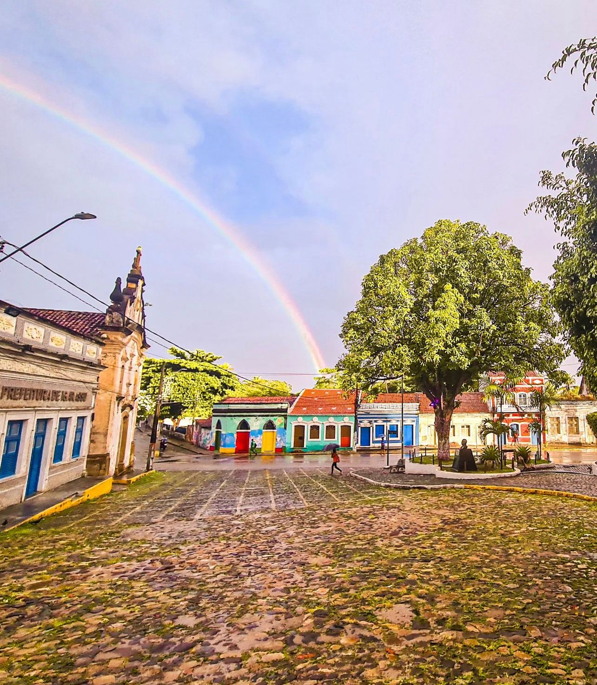
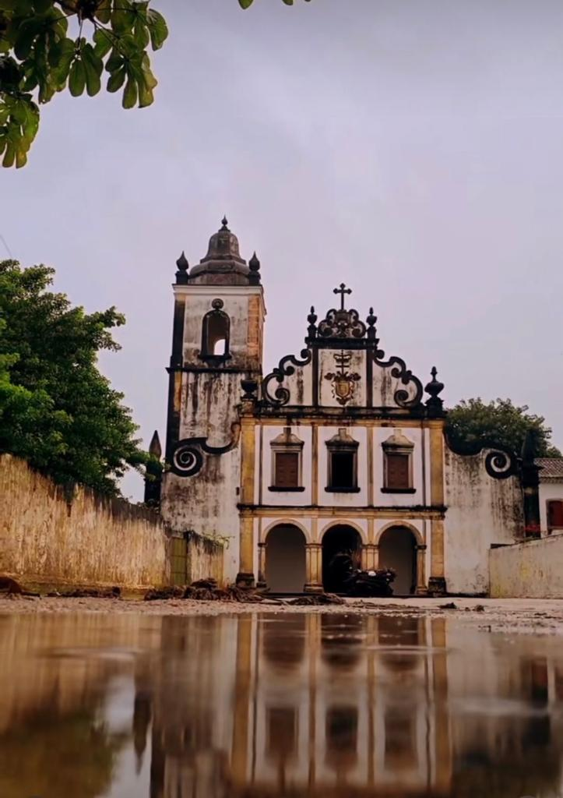
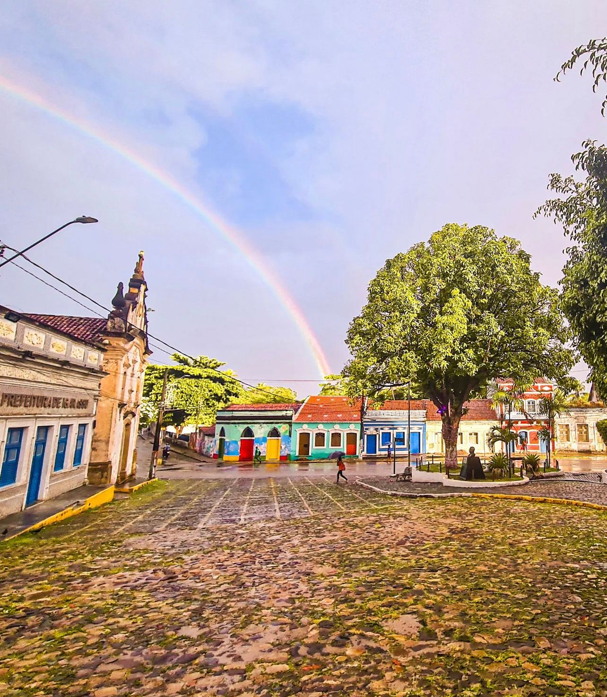
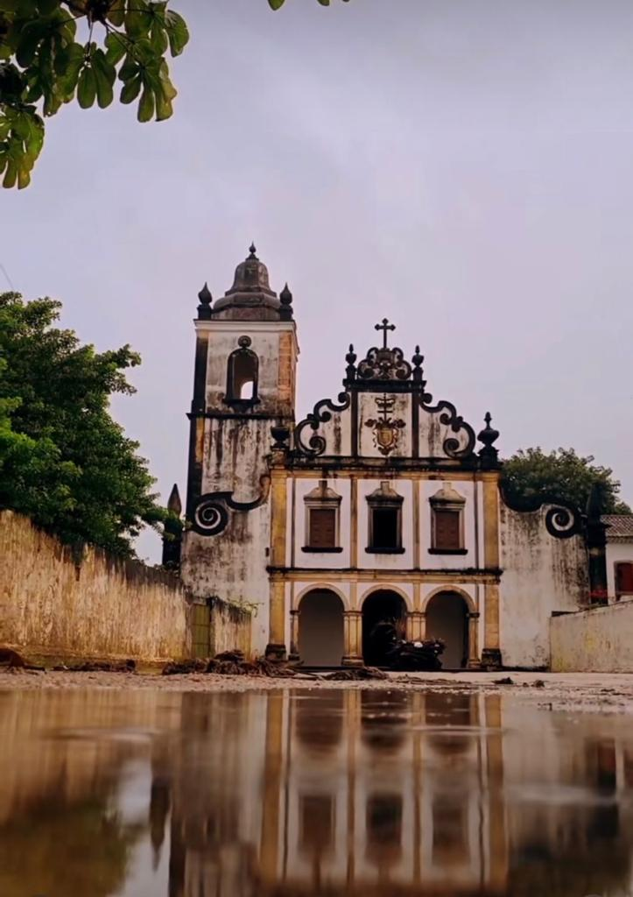

Igarassu cidade Historica
 



Sobre a história de Igarassu
O local onde foi criada Igarassu era habitado por índios Caeté. A construção de sua primeira igreja é atribuída à vitória dos portugueses, em 1530, sobre os índios Potiguara e os franceses que ali se encontravam. Porém, em 1535, o donatário da Capitania de Pernambuco, Duarte Coelho, desembarcou no local para tomar posse de suas terras doadas pela Coroa Portuguesa e travou intenso combate com os índios. Por ordem do donatário, no local foi instalado um marco de pedra que serviu de ponto divisório entre as capitanias de Pernambuco e Itamaracá, dando início ao processo de colonização do Brasil. Igarassu, cujo nome significa "canoa grande", foi fundada em 1536 por Duarte Coelho e ganhou categoria de freguesia, provavelmente, em 1550. Segunda vila, após São Vicente, a ser criada na colônia, sendo a primeira região ocupada em Pernambuco. Constituiu-se município autônomo em 1893 e, logo após, em 1895, elevou-se à categoria de cidade. A barra sul do Canal de Santa Cruz, primitivamente conhecida como rio Igarassu - mais tarde Porto de Pernambuco e Sítio dos Marcos - é um dos mais importantes núcleos de ocupação portuguesa do litoral nordestino. O passado da cidade é marcado pela sua participação em lutas libertárias, como a Revolução Praieira, quando as tropas do coronel Manoel Pereira de Morais se instalaram no Convento de Santo Antônio (construído em 1588, pelos padres franciscanos). Atualmente, no local funciona o Museu Pinacoteca de Igarassu que guarda um dos acervos mais representativos sobre a fase colonial brasileira. Constituiu-se município autônomo, em 1893, e foi elevada à condição de cidade com a mesma denominação, em 1895.